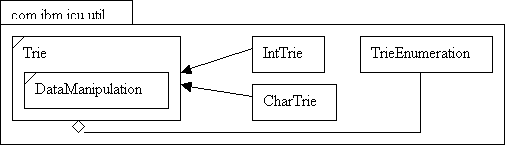

Proposal: Addition
of classes for a new folded Trie data structure
Jitterbug: 1586.
In the coming release 2.1, ICU4C will change the
way some of their data is stored by utilizing a folded Trie data structure. Since
ICU4J uses the same data files generated by ICU4C,
this is a proposal to add new classes similar to the APIs in
ICU4C's utrie.h (from CVS).
This new Trie will have a index array of elements
with 16 bits size and a data array with either 16 bits of
32 bits elements. To access the data, each codepoint is treated in their
UTF16 form with simple shifting and masking internal to the code. Users can
simply use the final classes provided, IntTrie or CharTrie, to access 32 bits
or 16 bits data respectively. Otherwise they can extend the abstract base class
Trie, and have their child class call get*Offset(..) directly to get the
offset to the data array for a codepoint.

/**
* <p>A trie is a kind of compressed, serializable table of
values
* associated with Unicode code points (0..0x10ffff).</p>
* <p>This class defines the basic structure of a trie and
provides methods
* to <b>retrieve the offsets to the actual data</b>.</p>
* <p>Data will be the form of an array of basic types, char
or int.</p>
* <p>The actual data format will have to be specified by the
user in the
* inner static interface
com.ibm.icu.util.Trie.DataManipulate.</p>
* <p>This trie implementation is optimized for getting
offset while walking
* forward through a UTF-16 string.
* Therefore, the simplest and fastest access macros are the
* fromLead() and fromOffsetTrail() methods.
* The fromBMP() method are a little more complicated; they get
offsets even
* for lead surrogate codepoints, while the fromLead() method get
special
* "folded" offsets for lead surrogate code units if
there is relevant data
* associated with them.
* From such a folded offsets, an offset needs to be extracted to
supply
* to the fromOffsetTrail() methods.
* To handle such supplementary codepoints, some offset information
are kept
* in the data.</p>
* <p>Methods in com.ibm.icu.util.Trie.DataManipulate are
called to retrieve that
* offset from the folded value for the lead surrogate
unit.</p>
* <p>For examples of use, see com.ibm.icu.util.CharTrie or
* com.ibm.icu.util.IntTrie.</p>
* @author synwee
* @see com.ibm.icu.util.CharTrie
* @see com.ibm.icu.util.IntTrie
* @since release 2.1, Jan 01 2002
*/
public abstract class Trie
{
// public class declaration
----------------------------------------
/**
* Character data in com.ibm.util.Trie have different
user-specified format
* for different purposes.
* This interface specifies methods to be implemented in order
for
* com.ibm.util.Trie, to surrogate offset information
encapsulated within
* the data.
*/
public static interface DataManipulate
{
/**
* Called by com.ibm.icu.util.Trie to extract from a lead
surrogate's
* data
* the index array offset of the indexes for that lead
surrogate.
* @param value data value for a surrogate from the trie,
including the
* folding
offset
* @return data offset or 0 if there is no data for the lead
surrogate
*/
public int getFoldingOffset(int value);
}
// protected constructor
-------------------------------------------
/**
* Trie constructor for CharTrie use.
* @param inputStream ICU data file input stream which contains
the
* trie
* @param datamanipulate object containing the information to
parse the
*
trie data
* @exception IOException thrown when input stream does not have
the
*
right header.
* @draft 2.1
*/
protected Trie(InputStream inputStream,
DataManipulate
dataManipulate) throws IOException;
// protected data members
------------------------------------------
/**
* Shift size for shifting right the input index. 1..9
*/
protected static final int INDEX_STAGE_1_SHIFT_ = 5;
/**
* Shift size for shifting left the index array values.
* Increases possible data size with 16-bit index values at the
cost
* of compactability.
* This requires blocks of stage 2 data to be aligned by
* DATA_GRANULARITY.
* 0..INDEX_STAGE_1_SHIFT
*/
protected static final int INDEX_STAGE_2_SHIFT_ = 2;
/**
* Mask for getting the lower bits from the input index.
* DATA_BLOCK_LENGTH_ - 1.
*/
protected static final int INDEX_STAGE_3_MASK_ =
(1 <<
INDEX_STAGE_1_SHIFT_) - 1;
/**
* Surrogate mask to use when shifting offset to retrieve
supplementary
* values
*/
protected static final int SURROGATE_MASK_ = 0x3FF;
/**
* Index or UTF16 characters
*/
protected char m_index_[];
/**
* Internal TrieValue which handles the parsing of the data
value.
* This class is to be implemented by the user
*/
protected DataManipulate m_dataManipulate_;
/**
* Start index of the data portion of the trie. CharTrie
combines
* index and data into a char array, so this is used to indicate
the
* initial offset to the data portion.
*/
protected int m_dataOffset_;
/**
* Length of the data array
*/
protected int m_dataLength_;
// protected methods
-----------------------------------------------
/**
* Gets the offset to the data which the surrogate pair points
to.
* @param lead lead surrogate
* @param trail trailing surrogate
* @return offset to data
* @draft 2.1
*/
protected abstract int getSurrogateOffset(char lead, char trail);
/**
* Gets the value at the argument index
* @param index value at index will be retrieved
* @return 32 bit value
* @draft 2.1
*/
protected abstract int getValue(int index);
/**
* Gets the default initial value
* @return 32 bit value
* @draft 2.1
*/
protected abstract int getInitialValue();
/**
* Gets the offset to the data which the index ch after variable
offset
* points to.
* Note for locating a non-supplementary character data offset,
calling
* <p>
* getRawOffset(0, ch);
* </p>
* will do. Otherwise if it is a supplementary character formed
by
* surrogates lead and trail. Then we would have to call
getRawOffset()
* with getFoldingIndexOffset(). See getSurrogateOffset().
* This is different from the C macro, because macros does not
need to
* handle types.
* @param offset index offset which ch is to start from
* @param ch index to be used after offset
* @return offset to the data
* @draft 2.1
*/
protected final int getRawOffset(int offset, char ch);
/**
* Gets the offset to data which the BMP character points to
* Treats a lead surrogate as a normal code point.
* @param ch BMP character
* @return offset to data
* @draft 2.1
*/
protected final int getBMPOffset(char ch);
/**
* Gets the offset to the data which this lead surrogate
character points
* to.
* Data at the returned offset may contain folding offset
information for
* the next trailing surrogate character.
* @param ch lead surrogate character
* @return offset to data
* @draft 2.1
*/
protected final int getLeadOffset(char ch);
/**
* Internal trie getter from a code point.
* Could be faster(?) but longer with
* if((c32)<=0xd7ff)
{ (result)=_TRIE_GET_RAW(trie, data, 0, c32); }
* Gets the offset to data which the codepoint points to
* @param ch codepoint
* @return offset to data
* @draft 2.1
*/
protected final int getCodePointOffset(int ch);
/**
* <p>Parses the inputstream and creates the trie index
with it.</p>
* <p>This is overwritten by the child classes.
* @param inputStream input stream containing the trie
information
* @exception IOException thrown when data reading fails.
* @draft 2.1
*/
protected void unserialize(InputStream inputStream) throws
IOException;
/**
* Determines if this is a 32 bit trie
* @return true if options specifies this is a 32 bit trie
* @draft 2.1
*/
protected final boolean isIntTrie();
/**
* Determines if this is a 16 bit trie
* @return true if this is a 16 bit trie
* @draft 2.1
*/
protected final boolean isCharTrie();
}
/**
* Trie implementation which
stores data in char, 16 bits.
*/
public class CharTrie extends
Trie
{
// public constructors
---------------------------------------------
/**
* <p>Creates a new Trie with the settings for the trie
data.</p>
* <p>Unserialize the 32-bit-aligned input stream and use
the data for the
* trie.</p>
* @param inputStream file input stream to a ICU data file,
containing
* the
trie
* @param dataManipulate, object which provides methods to parse
the char
* data
* @exception IOException thrown when data reading fails
* @draft 2.1
*/
public CharTrie(InputStream inputStream,
DataManipulate dataManipulate) throws
IOException;
// public methods
--------------------------------------------------
/**
* Gets the value associated with the codepoint.
* If no value is associated with the codepoint, a default value
will be
* returned.
* @param ch codepoint
* @return offset to data
* @draft 2.1
*/
public final char getCodePointValue(int ch);
/**
* Gets the value to the data which this lead surrogate
character points
* to.
* Returned data may contain folding offset information for the
next
* trailing surrogate character.
* This method does not guarantee correct results for trail
surrogates.
* @param ch lead surrogate character
* @return data value
* @draft 2.1
*/
public final char getLeadValue(char ch);
/**
* Get the value associated with the BMP code point.
* Lead surrogate code points are treated as normal code points,
with
* unfolded values that may differ from getLeadValue() results.
* @param ch the input BMP code point
* @return trie data value associated with the BMP codepoint
* @draft 2.1
*/
public final char getBMPValue(char ch);
/**
* Get the value associated with a pair of surrogates.
* @param lead a lead surrogate
* @param trail a trail surrogate
* @param trie data value associated with the surrogate
characters
* @draft 2.1
*/
public final char getSurrogateValue(char lead, char trail);
/**
* Get a value from a folding offset (from the value of a lead
surrogate)
* and a trail surrogate.
* @param leadvalue value associated with the lead surrogate
which contains
* the folding
offset
* @param trail surrogate
* @return trie data value associated with the trail character
* @draft 2.1
*/
public final char getTrailValue(int leadvalue, char trail);
// protected methods
-----------------------------------------------
/**
* <p>Parses the input stream and stores its trie content
into a index and
* data array</p>
* @param inputStream data input stream containing trie data
* @exception IOException thrown when data reading fails
*/
protected final void unserialize(InputStream inputStream)
throws IOException;
/**
* Gets the offset to the data which the surrogate pair points
to.
* @param lead lead surrogate
* @param trail trailing surrogate
* @return offset to data
* @draft 2.1
*/
protected final int getSurrogateOffset(char lead, char trail);
/**
* Gets the value at the argument index.
* For use internally in com.ibm.icu.util.TrieEnumeration.
* @param index value at index will be retrieved
* @return 32 bit value
* @see com.ibm.icu.util.TrieEnumeration
* @draft 2.1
*/
protected final int getValue(int index);
/**
* Gets the default initial value
* @return 32 bit value
* @draft 2.1
*/
protected final int getInitialValue();
}
/**
* Trie implementation which stores data in int, 32 bits.
*/
public class IntTrie extends
Trie
{
// public constructors
---------------------------------------------
/**
* <p>Creates a new Trie with the settings for the trie
data.</p>
* <p>Unserialize the 32-bit-aligned input stream and use
the data for the
* trie.</p>
* @param inputStream file input stream to a ICU data file,
containing
* the trie
* @param dataManipulate, object which provides methods to parse
the char
*
data
* @exception IOException thrown when data reading fails
* @draft 2.1
*/
public IntTrie(InputStream inputStream, DataManipulate
datamanipulate)
throws
IOException;
// public methods
--------------------------------------------------
/**
* Gets the value associated with the codepoint.
* If no value is associated with the codepoint, a default value
will be
* returned.
* @param ch codepoint
* @return offset to data
* @draft 2.1
*/
public final int getCodePointValue(int ch);
/**
* Gets the value to the data which this lead surrogate
character points
* to.
* Returned data may contain folding offset information for the
next
* trailing surrogate character.
* This method does not guarantee correct results for trail
surrogates.
* @param ch lead surrogate character
* @return data value
* @draft 2.1
*/
public final int getLeadValue(char ch);
/**
* Get the value associated with the BMP code point.
* Lead surrogate code points are treated as normal code points,
with
* unfolded values that may differ from getLeadValue() results.
* @param ch the input BMP code point
* @return trie data value associated with the BMP codepoint
* @draft 2.1
*/
public final int getBMPValue(char ch);
/**
* Get the value associated with a pair of surrogates.
* @param lead a lead surrogate
* @param trail a trail surrogate
* @param trie data value associated with the surrogate
characters
* @draft 2.1
*/
public final int getSurrogateValue(char lead, char trail);
/**
* Get a value from a folding offset (from the value of a lead
surrogate)
* and a trail surrogate.
* @param leadvalue the value of a lead surrogate that contains
the
* folding offset
* @param trail surrogate
* @return trie data value associated with the trail character
* @draft 2.1
*/
public final int getTrailValue(int leadvalue, char trail);
// protected methods
-----------------------------------------------
/**
* <p>Parses the input stream and stores its trie content
into a index and
* data array</p>
* @param inputStream data input stream containing trie data
* @exception IOException thrown when data reading fails
*/
protected final void unserialize(InputStream inputStream)
throws
IOException;
/**
* Gets the offset to the data which the surrogate pair points
to.
* @param lead lead surrogate
* @param trail trailing surrogate
* @return offset to data
* @draft 2.1
*/
protected final int getSurrogateOffset(char lead, char trail);
/**
* Gets the value at the argument index.
* For use internally in com.ibm.icu.util.TrieEnumeration.
* @param index value at index will be retrieved
* @return 32 bit value
* @see com.ibm.icu.util.TrieEnumeration
* @draft 2.1
*/
protected final int getValue(int index);
/**
* Gets the default initial value
* @return 32 bit value
* @draft 2.1
*/
protected final int getInitialValue();
}
/**
* <p>Class enabling enumeration of the values in a
Trie.</p>
* <p>Result of each iteration contains the interval of
codepoints that have
* the same value type and the value type itself.</p>
* <p>The comparison of each codepoint value is done via extract(),
which the
* default implementation is to return the value as it
is.</p>
* <p>Method extract() can be overwritten to perform
manipulations on
* codepoint values in order to perform specialized
comparison.</p>
* <p>TrieEnumeration is designed to be a generic enumerator
for the CharTrie
* and the IntTrie, hence to accommodate both types of data, the
return
* result will be in terms of int (32 bit) values.</p>
* <p>See com.ibm.icu.text.UCharacterEnumeration for examples
of use.</p>
*/
public class TrieEnumeration
implements Enumeration
{
// public constructor
---------------------------------------------
/**
* TrieEnumeration constructor
* @param trie to be used
* @exception IllegalArgumentException throw when argument is
null.
* @draft 2.1
*/
public TrieEnumeration(Trie trie);
// public methods
-------------------------------------------------
/**
* Tests if this enumeration contains more elements.
* @return true if and only if this enumeration object contains
at least
* one more
element to provide; false otherwise.
* @draft 2.1
*/
public final boolean hasMoreElements();
/**
* Returns the next set of codepoints with the same value type
and its
* values type if this enumeration object has at least one more
element
* to provide.
* This method returns a new instantiation of the result every
time it is
* called. If performance is an issue, use nextElementFast().
* @return next set of codepoints that have the same value type,
stored
* within a new
instance of Element.
* @exception NoSuchElementException - if no more elements exist.
* @see #nextElementFast
* @draft 2.1
*/
public final Object nextElement();
/**
* Returns the next set
of codepoints with the same value type and its
* values type if this enumeration object has at least one more
element
* to provide.
* This method rewrites the content of its result object and
returns the
* same result object every time it is called. If overwriting
previous
* results is an issue, use nextElement().
* @return next set of codepoints that have the same value type,
rewrites
* and returns
the same result object.
* @exception NoSuchElementException - if no more elements
exist.
* @see #nextElementFast
* @draft 2.1
*/
public final Object nextElementFast();
/**
* Called by nextElement() to extracts a 32 bit value from a
trie value
* used for comparison.
* This method is to be overwritten if special manipulation is
to be done
* to retrieve a relevant comparison.
* The default function is to return the value as it is.
* @param value a value from the trie
* @return extracted value
*/
public int extract(int value);
// public static inner class
--------------------------------------
/**
* Class wrapper for enumeration result.
* Stores the start and end codepoints of a range of codepoints
and
* the common value of this range of codepoints.
* @draft 2.1
*/
public static final class Element
{
// public constructor -----------------------------------------
/**
* Creates a wrapper for the start and end of a range of
codepoints
* and the common value for this range
* @param start first codepoint of the range of codepoints
* @param end 1 codepoint after the last codepoint of the
range
* @param value common value for this range of codepoints
* @draft 2.1
*/
protected Element(int start, int limit, int value);
// public methods
----------------------------------------------
/**
* Sets the start, limit and value in this instance
*/
protected final void set(int start, int limit, int value) ;
// public data members
-----------------------------------------
/**
* First codepoint of the range of codepoints
*/
public int start;
/**
* 1 codepoint after the last codepoint of the range
*/
public int limit;
/**
* common value for this range of codepoints
*/
public int value;
}
}